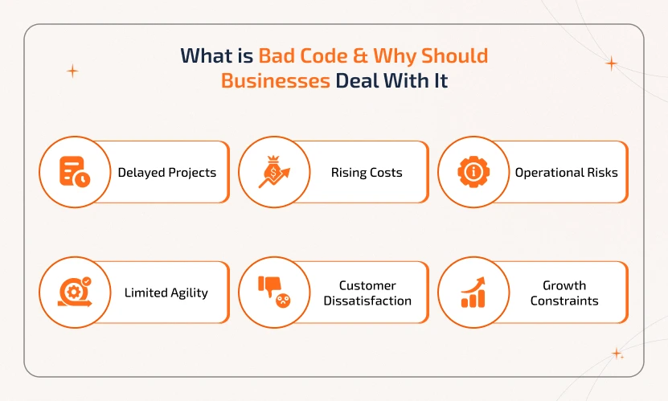
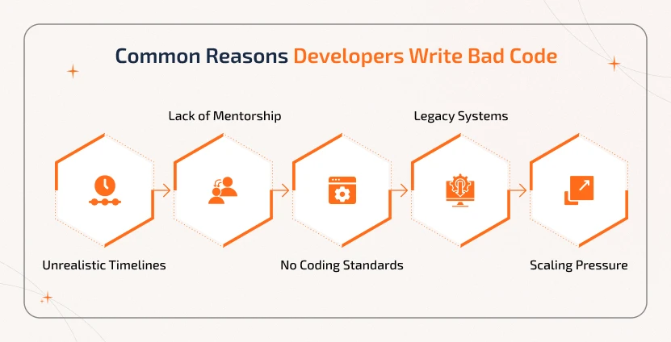
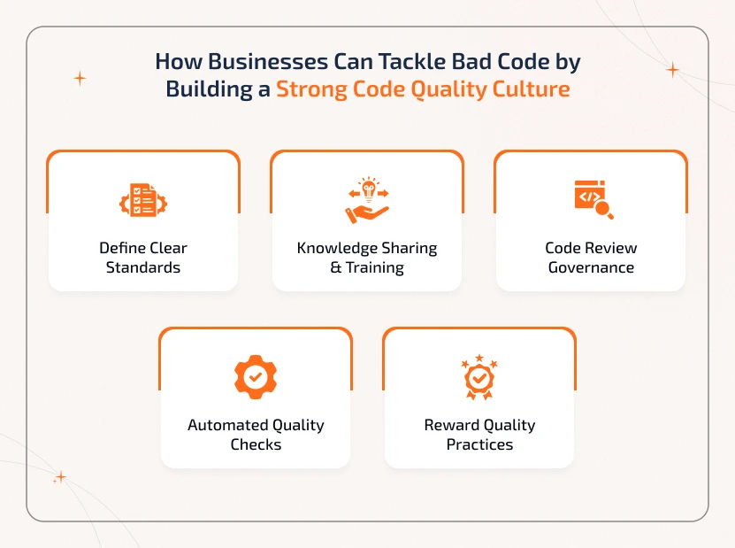
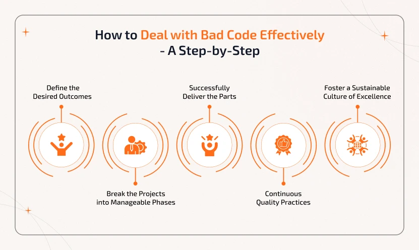
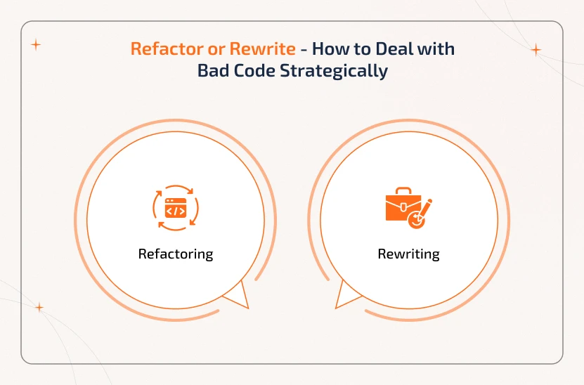
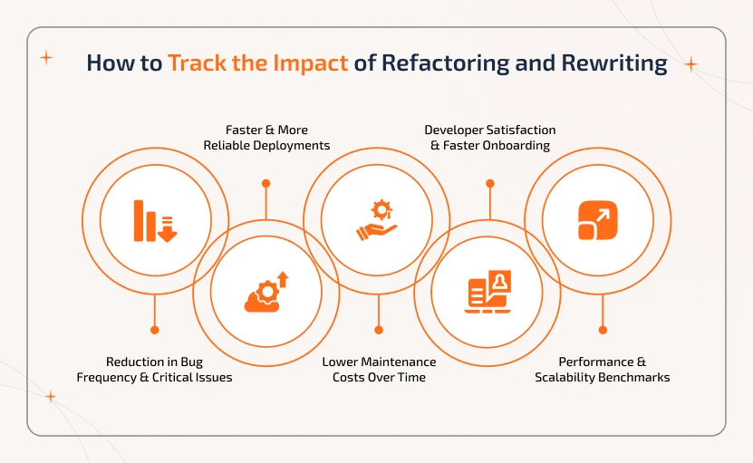
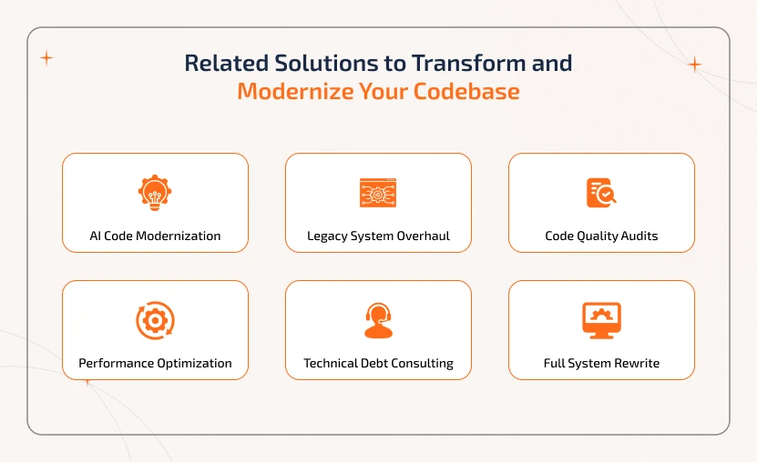

Delays, rising costs, and recurring bugs are the warning signs that bad code is directly impacting your software investment. Often, this occurs not because of the missing feature, but rather the quality of the code itself. Poorly structured or inconsistent code can slow down development, introduce recurring bugs, and make even small updates risky. That's why learning to deal with bad code is essential to keep the project on track.
Here in this guide, we will show you how to transform messy, error-prone software code into a clean, scalable architecture. You will find the practical strategies that help improve the code quality, speed up the development process, and build cross-platform apps or custom software development that is strong, maintainable, and ready to grow when your business evolves.
What is Bad Code & Why Should Businesses Deal With It
As the name suggests, bad code is often the software that is poorly written and is difficult to read, maintain, or extend. In other words, these codes fail to follow clean code principles, and when used in business, bring in long-term problems. Such code is typically described as messy, unorganized, or fragile, making future changes slower, riskier, and costlier. Any bad code in app or web development may work technically, but it slows down the project delivery, increases maintenance costs, and makes updates risky. Over time, this even affects the product's reliability, customer satisfaction, and the ability to scale your business.

1. Delayed Projects
Software that is hard to modify will
eventually slow time-to-market and delay critical business initiatives. This can
result in missed opportunities, slower responses to market changes, and a
competitive disadvantage.
2. Rising Costs
Frequent fixes and workarounds take up
higher resources and thus impact the overall budget. Over time, these recurring
expenses can reduce the availability of funds for growth and innovation.
3. Operational Risks
Even the small changes will break the
custom software development and
create disruptions. This also increases the dependency on emergency fixes and can
take up internal teamwork, causing inefficiencies.
4. Limited Agility
The difficulty in updating the software
reduces your business's ability to adapt to market demands. Thus, your business may
find it hard to implement new features quickly and hence affects customer
satisfaction and strategic flexibility.
5. Customer Dissatisfaction
Recurring issues or downtime
will affect the user experience and business trust. Negative experiences will lead
to reduced loyalty and loss in revenue.
6. Growth Constraints
With the poor quality code, scaling
the software or adding new features becomes tough. It can slow the expansion
process, limit the integration with emerging technologies, and even limit overall
business scalability.
By addressing bad code at an early stage, it is possible to reduce cost, protect your timelines, and create a stable foundation that supports future growth and innovation.
Key Characteristics of Bad Code That Can Affect Your Business
Bad code is not only a technical problem, it can directly affect your company's growth, costs, and product reliability. So, it is vital for business owners to understand the characteristics of bad code to plan the right strategy to address it and reduce risks.
1. Unmaintainable - Every change brings in risks and thus makes long-term growth difficult.
2. Unreadable - The logic of the code will be unclear, making it hard for the developers to understand and modify it further.
3. Rigid - The code resists change and makes it hard to adapt to new requirements.
4. Tightly Coupled - Modules will usually depend too much on each other. This creates chain reactions of errors.
5. Fragile - Even the small edits or deployments will lead to unintended breakages.
6. Unreliable - Performance and behavior of the bad codes will be inconsistent under real-world loads.
By recognizing these signs early, business leaders can take informed action on how to deal with bad code. Thus, ensuring smoother updates, better scalability, and lower long-term costs.
Top Reasons for Bad Code to Exist from Outsourcing Providers:
Just before proceeding to fix the bad code, it is vital to understand why it occurs. Identifying the root causes helps business leaders take strategic decisions on how to deal with bad code and prevent recurring issues.

1. Unrealistic Timelines - If the developers get under the pressure of meeting tight deadlines, they often take shortcuts, skip refactoring, or miss out on proper testing. As a result, the code becomes messy, fragile, and can cause delays, extra costs, and problems for your product.
2. Lack of Mentorship - Junior developers or team members with less experience may not receive proper code reviews or guidance. As a result, the code comes with repeated mistakes that are harder to maintain and slow down your project.
3. No Coding Standards - When there are no clear guidelines or shared conversations, each team writes bad code. This results in inconsistent and hard-to-maintain code that can slow down updates and increase costs for the businesses
4. Legacy Systems - When teams use old or outdated code, it makes adding new features or integrating with other systems harder. This can slow down your product updates and increase maintenance costs.
5. Scaling Pressure - When the project grows and new features need to be added quickly, the architecture's performance lags, and this leads to producing tightly coupled, unstructured, or patchy code.
By understanding these causes, business leaders can easily tackle the root problem instead of looking forward to repeatedly fixing the symptoms. By improving processes, setting clear standards, and using the right tools, companies can reduce errors, save time, and protect their product’s quality over the long term.
Find root causes, fix messy code & prevent recurring issues with expert guidance
How to Fix Bad Code Without Slowing Down Delivery
Recurring bad code will delay the releases, increase rework costs, and affect the business performance. For leaders, the key is not just identifying the problem but also finding a solution that fixes code efficiently and keeps the projects on track.
Rapid Code Audits - This is done to quickly find the problematic areas in your codebase and thereby prioritize fixes.
Safe Refactoring - It involves cleaning and restructuring the code without disrupting the ongoing projects or release schedules.
Knowledge Transfer - The teams learn standardized practices from experts, which in turn reduces future errors.
Continuous Monitoring - This ensures code quality remains high throughout the development across teams and external vendors.
Transparent Progress Reporting - Business leaders can get clear visibility of improvements and risk mitigation.
By leveraging expert services, businesses can eventually reduce technical debt, maintain delivery timelines, and enhance the long-term software quality without overburdening internal teams.
How Businesses Can Tackle Bad Code by Building a Strong Code Quality Culture
The adverse effects of bad code includes slowing down projects, increased costs, and long-term operational risks for businesses. Hiring a professional service provider not just fix the existing code, but it helps create a strong code quality culture that prevents future issues and ensure software reliability.

Define Clear Standards - It is best to set coding best practices and guidelines to ensure every team members follows the same. This offers consistency, reduces errors, and sets a baseline for further development.
Knowledge Sharing & Training - By conducting workshops, hands-on training and mentoring, it is possible to teach the best practices and keep your team up-to-date on modern coding standards.
Code Review Governance - It is better to implement all code is reviewed by experts before deployment. This offers the advantage of catching errors early, reducing risks, and ensures high-quality software delivery.
Automated Quality Checks - By using tools, it is easy to detect errors early, maintain consistency and adapt style automatically. This in turn saves time and ensures code quality without slowing down the development.
Reward Quality Practices - It is good to recognize teams that prioritize producing clean design and maintainable code. This motivated them to work better and helps businesses maintain high standards while preventing bad code issues.
By leveraging these strategies, businesses can prevent messy code from turning into costly legacy problems, improve operational efficiency, and deliver software that supports growth without overburdening internal teams with technical complexity.
Establish standards, collaboration & accountability to prevent bad code and improve maintainability.
How to Deal with Bad Coding Practices Through Strong Test Coverage
Testing is one of the most effective ways to stop bad code from causing repeated problems. No matter if you are working on web applications, AI systems, or legacy software, thorough testing ensures that the issue will not arise again. i.e., once the issues are fixed, they stay fixed.
1. Implement Unit & Integration Tests
To catch the bugs
early, it is better to test individual components and their interactions. This
reduces costly errors and ensures software reliability.
2. Automate Regression Checks Via CI/CD
This ensures that
any changes further to the code will not break the existing functionality. Thus,
ensures your application remains stable.
3. Aim for Coverage Before Deployment
Pre-deployment
testing means lower the risk of recurring errors. Thus businesses can save time and
avoide costly rework.
4. Collaborate with QA Early in Sprints
Involving QA from
the start helps catch issues before they escalate. This in turn ensures smoother
project delivery.
By using these practices, businesses can effectively deal with bad code, reduce downtime, and maintain software that consistently performs—without overloading internal teams with technical work.
How to Deal with Bad Code Effectively - A Step-by-Step Guide
Dealing with messy code is not just about fixing the errors faster; rather, it is about building structured roadmap that ensures the software is stable, maintainable, and supports business goals. Professional services helps businesses turn messy code into reliable systems.

1. Define the Desired Outcomes
Begin by defining what
success is all about. It may be improving performance, maintainability, or
scalability. With the clear objectives, the code quality improvements benefit your
operations and reduce long-term costs.
2. Break the Projects into Manageable Phases
It is better
not to try fixing all the issues at once. Rather, divide the project into smaller,
manageable phases. This ensures quality, reduces disruptions, and maintains
continuity for your business operations.
3. Successfully Deliver the Parts
Make improvements step by
step by checking each part before moving on. This avoids new problems and keeps your
software stable and on track.
4. Continuous Quality Practices
Businesses can implement
ongoing monitoring, coding standards, and automated checks. This ensures bad code
from reappearing and helps maintain long-term software reliability.
5. Foster a Sustainable Culture of Excellence
Promote
accountability, best practices, and clear quality benchmarks. This allows your
business maintain high standards, reduce technical debt, and ensure software remains
scalable and reliable over time.
This is a structured approach and this not only helps teams clean up bad code but also build a sustainable culture of technical excellence. As a result, the quality becomes a part of every developer's workflow.
Refactor or Rewrite - How to Deal with Bad Code Strategically
If an application becomes unstable, outdated, or difficult to maintain, then teams will need to face a crucial decision. i.e., either refactor the existing code or rewrite it from scratch. Choosing the right approach often depends on the state of the current system and long-term goals.

Refactoring:
- This involves restructuring the existing code without changing its external behaviour.
- It is ideal when the architecture is fundamentally solid but the codebase is inconsistent or messy.
- Benefits businesses by reducing errors, improving maintainability, and saving time and cost compared to a full rewrite.
Rewriting:
- This is a process that involves building application from scratch using modern frameworks, tools, and practices.
- It works the best when the current system is outdated, riddled, or flawed to the maximum with repeated bugs and security issues.
- Offers businesses with a clean slate and long-term scalability while taking up more time and resource upfront.
How to Decide:
Upon understanding what refactoring and
rewriting is all about, the next step is to decide between which approach fits your
project's specific needs. There are several practical factors that help you guide
this decision:
1. Codebase Stability - If the core logic works, choose refactor; if it frequently breaks, consider rewriting.
2. Time and Budget - Refactoring is faster and less costly. Whereas rewriting provides cleaner, long-term solutions.
3. Technology Stack - Refactoring for modern or acceptable dependencies. Outdated dependencies or frameworks often require a rewrite.
4. Future Growth - Choose the approach that supports scalability and long-term maintenance.
This balance helps when modernizing outdated code or fixing bad code left by previous development teams.
Key Takeaway:
If your application has
recurring issues, security vulnerabilities, or an unmanageable architecture,
rewriting is the best option as it offers the best long-term solution. However,
refactoring works well for those applications where improvements can be made without
needing to start from scratch.
Get expert guidance to decide whether to refactor or rebuild your software for long-term scalability
How to Track the Impact of Refactoring and Rewriting
Improving the code quality is not just about rewriting or refactoring; it also means proving the changes that deliver real business vaule. Without a tracking process, it is difficult to determine if the changes actually improve the stability, reduce cost, or enhance developer productivity. By measuring outcomes, teams can easily check the ROI, guide future improvements, and stay motivated.

1. Reduction in Bug Frequency & Critical Issues
Fewer
production errors means the software is more stable, comes with fewer issues and
reduced risk to operations.
2. Faster & More Reliable Deployments
Faster and smoother
releases show the efficiency gains and help keep projects on schedule.
3. Lower Maintenance Costs Over Time
Spending less time
fixing recurring problems implies long-term cost savings.
4. Developer Satisfaction & Faster Onboarding
Clean and
reliable code helps new developers ramp up quickly and minimizes frustration.
5. Performance & Scalability Benchmarks
Measured
improvements in response times, load handling, or system scalability imply technical
gains.
A measurable approach ensures that businesses can deal with bad code effectively, measure real improvements, and make informed data-driven decisions. With this, businesses can make data-driven decisions and continuously improve code quality.
Our Proven Capability in Restoring Code Quality & Business Confidence
We at Sparkout help businesses regain control over unstable systems by finding, repairing, and preventing bad code that restricts the growth, slows the delivery, or increases maintenance costs.
Our team of experts combines deep technical expertise with structured, repeatable practices to help businesses transform fragile, error-prone applications into reliable, high-performing products. Through comprehensive code audits, strategic refactoring, and continuous testing, we ensure that every bad code fix is permanent and every improvement delivers measurable business impact.
Whether you are dealing with inherited code, legacy systems, or performance bottlenecks, our experts at Sparkout deliver clean, maintainable, and scalable architecture that is built to support your long-term business goals.
From the start, we focus on understanding your project's current challenges, hidden inefficiencies, and future goals. We then create a clear transition plan that includes knowledge transfer, technology alignment, and risk mitigation. This way, you will get full control while we handle the complex technical stuff.
We keep our communication open and provide continuous progress visibility to help your business move forward with confidence.
We have successfully partnered with clients like TravelHero, Hireki.ai, Farmsent, and Parkk, helping them stabilize their products, accelerate delivery, and reduce long-term maintenance costs. By restoring code quality and engineering discipline, we not only strengthen your product’s performance but also build confidence across your teams, stakeholders, and clients.
Why Choose Sparkout to Help You Deal with Bad Code?
At Sparkout Tech, we are not just involved in fixing the broken code, rather, we transform it into scalable, future-ready software that supports your business goals. We have an experienced development team consisting of software engineers, solution architects, senior developers, and QA specialists. Our experts ensure to modernize legacy applications, clean up inherited codebases, and refactor complex systems into secure, scalable architectures.
We follow a structured, audit-driven approach that combines deep technical analysis, AI-powered optimization, and industry-proven best practices. Thus, we ensure your software evolves while supporting long-term growth.
- We modernize outdated Java, Python, and other codebases to improve stability and maintainability.
- We are involved in fixing bugs and errors in legacy app code to reduce downtime and operational risks.
- We also optimize AI-driven applications for performance, scalability and reliability for critical systems.
- Our team conducts in-depth team code reviews and technical debt audits to help with strategic decision-making.
- We rebuild weak architectures and fix previous team code into secure, scalable platforms that support business growth.
- By modernizing outdated systems, we help you meet current development and performance standards.
- We enhance scalability, security, and long-term maintainability.
With Sparkout, businesses can deal with bad code effectively, improve software quality and gain measurable benefits.
Partner with Sparkout to refactor, optimize, and modernize your code
Related Solutions to Transform and Modernize Your Codebase
At Sparkout Tech, we offer a full range of solutions that are designed to help businesses deal with bad code, modernize outdated systems, and strengthen software performance. Whether you are struggling with legacy architecture or unstable AI models, our connected services help you rebuild your codebase effortlessly.

1. AI Code Modernization
We fix bad AI codes and optimize
machine learning workflows for better accuracy and performance.
2. Legacy System Overhaul
Our team refactors or rebuilds
legacy Java, .NET, and web applications with the help of modern frameworks.
3. Code Quality Audits
We find out the poor coding
practices, maintainability issues, and technical bottlenecks through detailed
audits.
4. Performance Optimization
Our team ensures to improve the
app speed, responsiveness, and reliability across all the platforms.
5. Technical Debt Consulting
We analyse, prioritize, and
fix high-risk dependencies to improve long-term system stability.
6. Full System Rewrite
We also rebuild inherited or
outdated AI and web development from the ground up for modern performance and
scalability.
All of the above solutions complements our refactoring and rewriting services and thus helps you turn your bad code into a strong foundation for future innovation.
Final Thoughts - Turn Technical Debt into Competitive Advantage
There is a change for every company to encounter poor coding practices. Learning to respond is the ideal way to reach success. By learning how to fix bad code from previous app development teams and investing in code quality in teams, you are not only cleaning your codebase, but also strengthening your foundation for growth. Good code is a business advantage that drives faster innovation, scalability, and trust.